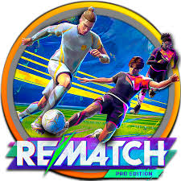
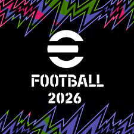
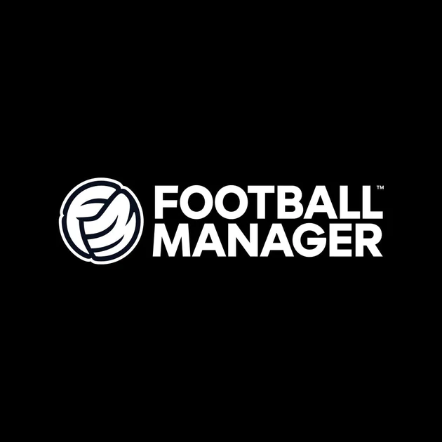
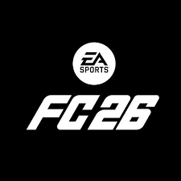

Recommendation Games

Rematch
Game sepak bola multiplayer 5v5 dengan sudut pandang orang ketiga (third-person) yang sangat unik dan penuh aksi. Tidak ada pelanggaran, offside, atau status/atribut pemain yang menguntungkan. Kemenangan murni ditentukan oleh kelincahan skill jarimu, refleks, dan kerja sama tim.
Lihat Game
eFootball 2026
Generasi terbaru dari game legendaris PES (Pro Evolution Soccer) garapan Konami. Game ini menawarkan simulasi sepak bola yang sangat realistis dengan pembaruan gameplay, animasi, serta taktik terbaru. Nilai plusnya: game ini bisa kamu mainkan secara gratis (Free to Play)!.
Lihat Game
Football Manager 26
Game simulasi manajerial sepak bola paling mendalam dan detail yang pernah ada. Di versi terbaru dengan engine grafis baru ini, kamu memegang kendali penuh atas sebuah klub: mulai dari meracik taktik, berburu pemain di bursa transfer, mengatur keuangan, hingga mengelola liga sepak bola wanita.
Lihat Game
EA SPORTS FC™ 26
Game simulasi sepak bola paling realistis dan populer untuk PC saat ini, penerus dari seri legendaris FIFA.
Lihat Game